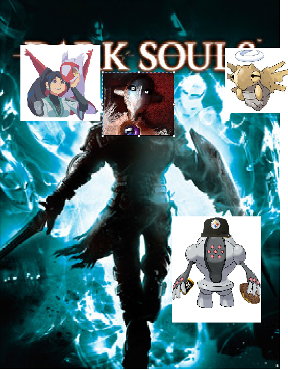

Ok thank goodness you made it here LOL
I honestly wasn’t sure if those were the only Pokemon pfps we had and I knew you guys would be really annoying if I misremembered and it fucked up the answer.
Anyways I really like the Word of the Day bit from the Yard extended universe so I made my own, except you guys have to find the words of the day and put them in here
to get much needed info!
For me to talk again, there are two conditions. Find all 5 words of the day (one per weekday), and perform the hidden message. You must do both to win.

Word of the Day: vivacious
— emoj1r2l3a4e5s6n7t.bsky.social (@emoj1r2l3a4e5s6n7t.bsky.social) July 1, 2025 at 12:59 AM
We all know everyone in PBI loves new languages. Translate the below emojis into English phrases and sentences for Wednesday's word of the day!
Note: chrome is weird about emojis.
If you are on chrome, in the above list, the first broken emoji is the pointing at viewer emoji,
the second broken emoji is the worm emoji, and
the third broken emoji should be the people hugging emoji.